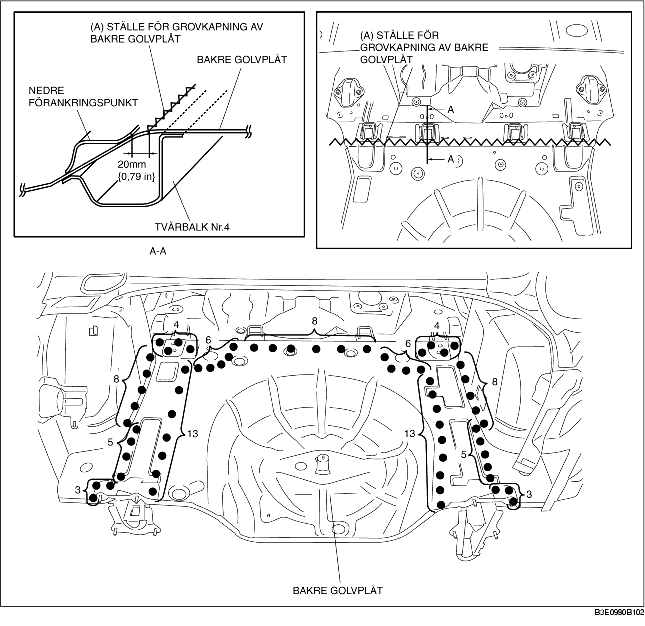
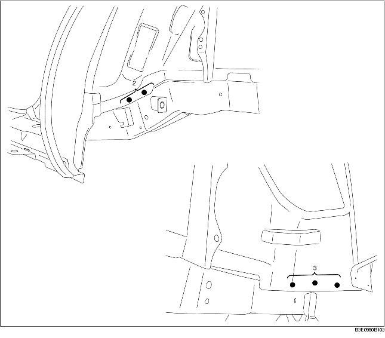

BORTTAGNING AV BAKRE GOLVPLÅT
B3E098053750B01
1. Grovkapa område (A).
Försiktigt
• Vid grovkapning av område (A), skär bort 20 mm {0,79 in} från flänsen (bakåt) i bakkanten på den nedre förankringen.
2. Ta bort den bakre golvplåten.

